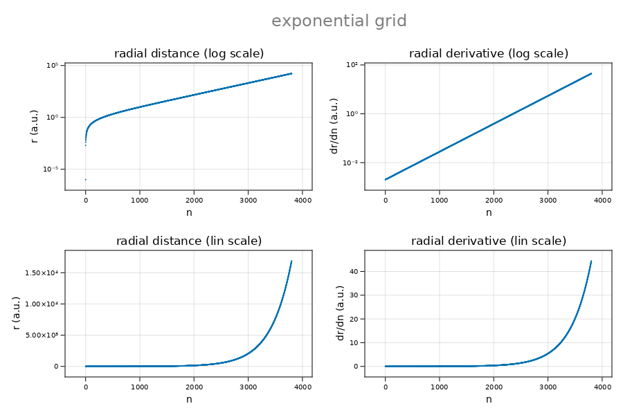

Grid
The CamiDiff.Grid object is the backbone for the numerical procedure on a non-uniform grid. Its principal fields are grid.r and grid.r′, which are discrete functions of N elements representing the grid function and its derivative.
autoGrid
CamiXon.autoGrid — MethodautoGrid(atom::Atom, T::Type; p=0, rmax=0, nmax=0, N=0, polynom=[], epn=5, k=5, msg=false)Automatic setting of grid parameters for a given orbit Orbit or an array of orbits - orbits = [orbit1, orbit2, ⋯]. Important cases:
p == 0(exponential radial grid)p == 1(linear radial grid)p > 1(quasi-exponential radial grid)polynom=[](free polynomial grid based on thepolynom)Nboost(multiplier to boost numerical precision)epn(endpoint number: odd number to be used for trapezoidal integration with endpoint correction)k(Adams-Moulton order to be used fork+1-point Adams-Moulton integration)
Example:
julia> atom = castAtom(;Z=1, A=1, Q=0, msg=false);
julia> spinorbit = castSpinorbit(n=75, ℓ=0, msg=false);
julia> grid = autoGrid(atom, Float64; nmax=spinorbit.n, msg=true);
Grid: exponential, Float64, rmax = 14137.5, N = 7900, h = 0.00126582, r0 = 0.642684
plot_gridfunction(grid, 1:grid.N; title="")The plot is made using CairomMakie. NB.: plot_gridfunction is not part of the CamiXon package. 
autoNtot
CamiXon.autoNtot — MethodautoNtot(n::Int)Total number of gridpoints (rule of thumb value)
\[ N_{tot} = 400 + 100\ n,\]
where $n$ is the principal quantum number
Example:
julia> autoNtot(1)
500autoRmax
CamiXon.autoRmax — MethodautoRmax(atom::Atom, n::Int; rmax=0.0)Largest relevant radial distance in a.u. (rule of thumb value)
\[ R_{max} = (2.5n^2 + 75.0)/Zc,\]
where $n$ is the principal quantum number and $Z_c$ the Rydberg charge
Example:
julia> atom = castAtom(Z=1, A=1, Q=0);
julia> rmax = autoRmax(atom, n; rmax=0.0); println("rmax = $(rmax) a.u.")
rmax = 77.5 a.u.autoPrecision
CamiXon.autoPrecision — MethodautoPrecision(rmax::T, ℓ = 0) where T<:RealFloating point precision (rule of thumb value)
Example:
julia> atom = castAtom(Z=1);
julia> orbit = castOrbit(n=1,ℓ=0);
julia> rmax = autoRmax(atom, 0; rmax=0.0); println("rmax = $(rmax) a.u.")
rmax = 77.5 a.u.
julia> o = autoPrecision(rmax, 0); println("precision = $o")
precision = Float64Def
The Def object serves to define the problem to be solved and to contain in the field def.Z the solution as a discrete function of N elements.
CamiXon.Def — TypeDef(T, atom, spinorbit, pot, scr, o1, o2, o3, pos, epn, k, am, matLD)Type with fields:
.atom::Atom: atom object.spinorbit::Spinorbit: spinorbit object.codata::Codata: codata object.pot::Vector{T}: tabulated potential function.scr::Vector{T}: tabulated screening function.potscr::Vector{T}: tabulated screened potential function.G::Vector{Matrix{T}}: vector of zero-filled matrices.σ::Vector{Matrix{T}}: vector of zero-filled matrices.Minv::Vector{Matrix{T}}: vector of zero-filled matrices.pos::Pos: object with fields Na, Nlctp, Nmin, Nuctp, Nb, N and nodes.epn::Int: number of endpoints trapezoidal correction - must be odd.k::Int: Adams-Moulton order.am::Vector{T}: Adams-Moulton weight coefficients.matLD::Matrix{T}: Lagrangian differentiation matrix
The object Def is best created with the function castDef.
castDef
CamiXon.castDef — MethodcastDef(grid::CamiDiff.Grid{T}, atom::Atom, spinorbit::Spinorbit, codata::Codata [; pos=nothing, [scr=nothing[, msg=false]]) where T <: RealCreate the Def object starting from the CamiDiff.Grid object and the atomic properties of the objects Atom and Orbit. Optional: scr (supply screening array)
Example:
julia> codata = castCodata(2018)
julia> atom = castAtom(Z=1, A=1, Q=0);
julia> orbit = castOrbit(n=7, ℓ=2);
julia> grid = autoGrid(atom, orbit, Float64);
julia> castDef(grid, atom, orbit, codata, msg=true);
Def created for hydrogen 7d on exponential grid of 400 pointsPos
The Pos object serves within Def object to contain the position indices def.Na, def.Nb, def.Nlctp, def.Nmin, def.Nuctp used in Adams-Moulton integration. These positions are contained in the fields def.pos.Na, def.pos.Nb, def.pos.Nlctp, def.pos.Nmin, def.pos.Nuctp.
CamiXon.Pos — Typemutable struct Pos{T} where T<:RealType with fields:
.Na::Int: grid index of last leading point.Nlctp::Int: grid index of lower classical turning point.Nmin::Int: grid index of (screened) potential minimum.Nuctp::Int: grid index of upper classical turning point.Nb::Int: grid index first trailing point.N::Int: grid index last point.nodes::Int: number of nodes in reduced wavefunction (r ≠ 0).ΔNlctp::Float64: lctp offset with respect to Nlctp (1.0 ≤ ΔN ≤ 1.0).ΔNuctp::Float64: uctp offset with respect to Nuctp (-1.0 ≤ ΔN ≤ 0.0)
Mutable struct to hold special grid indices as well as the number of nodes and the (negative) offset of the exact uctp with respect to Nuctp. Pos is one of the fields of the Def object
Examples:
julia> pos = Pos(1, 2, 3, 4, 5, 6, 7, 8.0, 9.0, 10.0);
julia> pos.Nuctp
4
julia> pos.Nuctp = 8;
julia> pos
Pos(1, 2, 3, 8, 5, 6, 7, 8.0, 9.0, 10.0)castPos
CamiXon.castPos — MethodcastPos(E::T, Veff::Vector{T}, grid::CamiDiff.Grid{T}) where T<:RealCreate the Pos object starting from the energy E, and the effective potential energy (screened Coulomb potential) Veff[n] tabulated on the CamiDiff.Grid.
updatePos!
CamiXon.updatePos! — MethodupdatePos!(pos::Pos, E::T, Veff::Vector{T}, grid::CamiDiff.Grid{T}) where T<:RealUpdate the Pos object starting from the energy E, and the effective potential energy (screened Coulomb potential) Veff[n] tabulated on the CamiDiff.Grid.
listPos
CamiXon.listPos — MethodlistPos(pos::Pos [; msg=true])Pos-related functions
CamiXon.getNmin — MethodgetNmin(f::Vector{T}, start::Int, stop:Int) where T<:Real
getNmin(f::Vector{T}, itr::UnitRange) where T<:RealIndex corresponding to the absolute minimum of the discrete function $f[n]$ truncated at the boundary of the interval $start ≤ n ≤ stop$. Condition: $f'[n]$ must be monotonically increasing or decreasing on the interval ${start,stop}$.
NB. For a regular parabola the algorithm finds the index of the minimum. A truncated inverted parabola has two minima (at the boundaries of the interval). In this case the algorithm finds the index of the lowest of the two. If undecided the result is start.
CamiXon.getNmax — MethodgetNmax(f::Vector{T}, start::Int, stop:Int) where T<:Real
getNmax(f::Vector{T}, itr::UnitRange) where T<:RealIndex corresponding to the absolute maximum of the discrete function $f[n]$ truncated at the boundaries of the interval $start ≤ n ≤ stop$. Condition: $f'[n]$ must be monotonically increasing or decreasing on the interval ${start,stop}$.
NB. For an inverted parabola the algorithm finds the index of the extremum. A regular parabola has two maxima (at the boundaries of the search interval). In this case the algorithm finds the index of the highest of the two. If undecided the result is start.
CamiXon.getNcut — MethodgetNcut(f0::T, f::Vector{T}, start::Int, stop::Int) where T<:Real
getNcut(f0::T, f::Vector{T}, itr::UnitRange) where T<:RealIndex corresponding to the intersection point of the discrete function $f[n]$ with the value $f_0$ in the interval start ≤ n ≤ stop,
\[ f[n_{cut}] = f_0.\]
Condition: $f[n]$ must be monotonically increasing or decreasing on the interval start ≤ n ≤ stop.
NB. For a monotonically decreasing function $n_{cut}$ is approximated by the largest $n$ for which $f[n] > f_0$. For a monotonically increasing function $n_{cut}$ is approximated by the smallest $n$ for which $f[n] > f_0$.
CamiXon.getΔNcut — MethodgetΔNcut(f0::T, f::Vector{T}, Ncut::Int, sense=fwd; ϵ = 1e-8, k = 7)Offset of the exact intersection with respect to the index Ncut given as a Real number. ϵ - convergence goal k - order of a k+1 point Lagrange interpolation procedure based on a linear grid. Forward sense (fwd): value in the interval {0.0, 1.0} Backward sense (bwd): value in the interval {-1.0, 0.0}